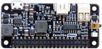

❮❮❮ Zero2Go Omini


Channel-A: 0.0V
Channel-B: 0.0V
Channel-C: 0.0V
Working Mode: Step-Up
Default State when Powered:
Blinking Interval when Standby:
After Shutdown, Cut Power in:
Low Voltage Threshold:
Recovery Voltage Threshold:
Step-Down Engine Always-On?